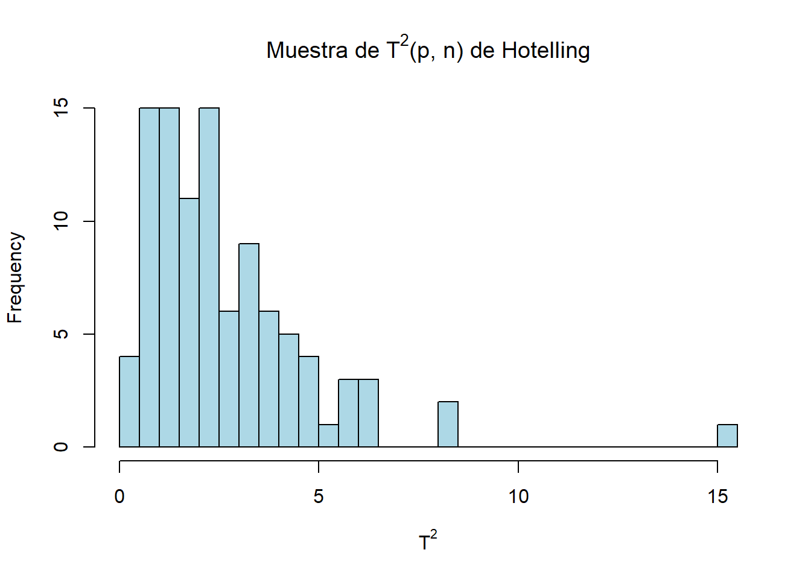
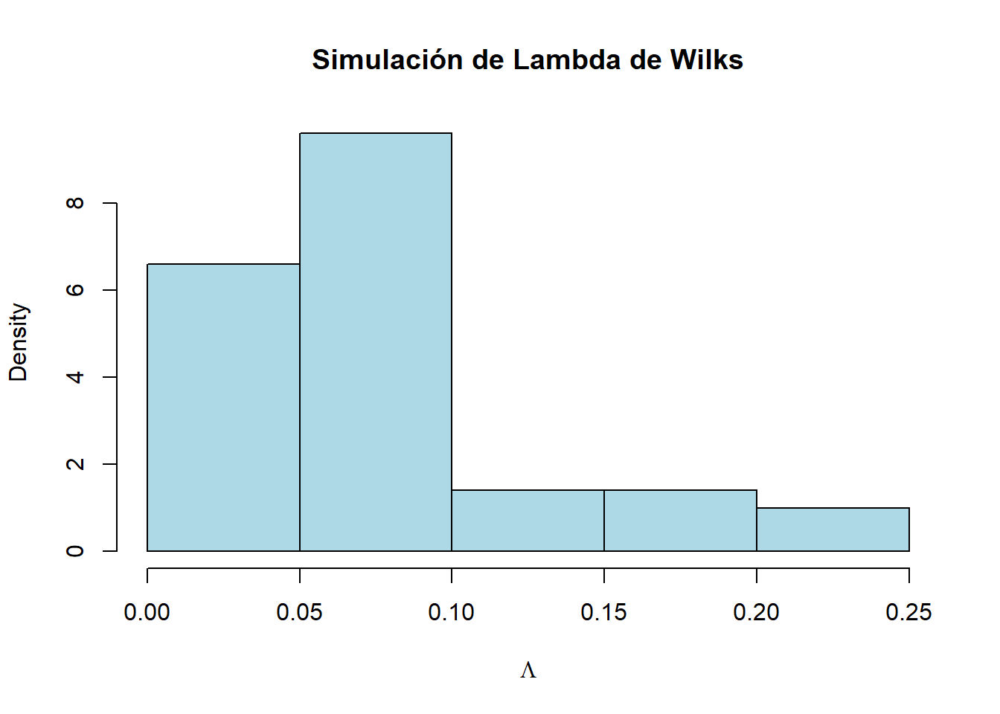

Sigma <- matrix(c(1, 0, 1,
0, 3, 1,
1, 1, 2),
nrow = 3, ncol = 3, byrow = TRUE)
a <- c(1,2,-3)
Var_Y = a %*% Sigma %*% a
Var_Y [,1]
[1,] 1320582- Análisis de Datos para el GMAT
Dídac Capó Peña:
Supongamos que un analista financiero quiere estudiar la relación entre tres tipos de activos financieros: el precio de una acción \(X_1\), la tasa de interés de un bono \(X_2\), y el precio de una materia prima \(X_3\). Se asume que el vector \(\mathbf{X} = (X_1, X_2, X_3)^t\) sigue una distribución normal multivariante con media \(\mu = (-1, 1, 0)^t\) y matriz de covarianzas
\[ \Sigma = \begin{pmatrix} 1 & 0 & 1 \\ 0 & 3 & 1 \\ 1 & 1 & 2 \end{pmatrix} \]
Sabemos que \(X_1\sim N(-1,1), X_2\sim N(1,3)\) y \(X_3 \sim N(0,2)\), ya que en la diagonal de la matriz \(\Sigma\) tenemos las varianzas de las respectivas variables y en el vector de medias tenemos sus medias.
Ahora sabemos que \(Var(Y) = a^T \Sigma a\), donde \(a = (1,2,3)^T\). Entonces:
Sigma <- matrix(c(1, 0, 1,
0, 3, 1,
1, 1, 2),
nrow = 3, ncol = 3, byrow = TRUE)
a <- c(1,2,-3)
Var_Y = a %*% Sigma %*% a
Var_Y [,1]
[1,] 13Por lo tanto, \(Var(Y) = 13\) Además, \[E(Y) = E(X_1 + 2X_2 - 3X_3) = E(X_1) + 2E(X_2) - 3E(X_3) = 1\] ya que el valor esperado de una normal es su media \(\mu_i\).
Entonces:
\[Y \sim N(1, 13)\]
El objetivo es encontrar un vector \(a \in \mathbb{R}^2\) tal que las variables \(X_1\) y \(X_1 - a^T\begin{pmatrix} X_2 \\ X_3 \end{pmatrix}\) sean independientes. Para esto, necesitamos que la covarianza entre estas dos variables sea cero, esto aplica en este caso porque las variables \(X_i\) son normales (en general \(Cov(M,N)=0\) no implica que \(M,N\) sean independientes), es decir, buscamos que:
\[\text{Cov} \left( X_1, X_1 - a^t \begin{pmatrix} X_2 \\ X_3 \end{pmatrix} \right) = 0\]
Expandiendo la covarianza, obtenemos:
\[\text{Cov} \left( X_1, X_1 - a^t \begin{pmatrix} X_2 \\ X_3 \end{pmatrix} \right) = \text{Cov}(X_1, X_1) - \text{Cov} \left( X_1, a^t \begin{pmatrix} X_2 \\ X_3 \end{pmatrix} \right)\]
Sabemos que \(\text{Cov}(X_1, X_1) = \text{Var}(X_1) = 1\), y la covarianza de \(X_1\) con una combinación lineal de \(X_2\) y \(X_3\) es:
\[\text{Cov} \left( X_1, a^t \begin{pmatrix} X_2 \\ X_3 \end{pmatrix} \right) = a^t \begin{pmatrix} \text{Cov}(X_1, X_2) \\ \text{Cov}(X_1, X_3) \end{pmatrix}\]
Por lo tanto, la condición anterior es:
\[1 - a^t \begin{pmatrix} 0\\ 1 \end{pmatrix} = 0\]
De aquí, obtenemos que \(a_2 = 1\) y \(a_1\) cualquiera. Entonces \(a^T=(a_1,1)\)
Considera la muestra
\[ \mathbf{X} = \begin{pmatrix} 2 & 6 & -3 \\ -4 & 8 & 7 \\ -2 & 9 & 7 \\ -7 & 8 & 2 \end{pmatrix} \]
de una población \(\mathcal{N}_3(\mu, \Sigma)\) con \(\mu\) y \(\Sigma\) desconocidos.
El estimador de máxima verosimilitud de \(\mu\) es la media muestral: \[ \hat{\mu} = \frac{1}{4} \begin{pmatrix} 2 + (-4) + (-2) + (-7) \\ 6 + 8 + 9 + 8 \\ -3 + 7 + 7 + 2 \end{pmatrix} = \begin{pmatrix} -2.75 \\ 7.75 \\ 3.25 \end{pmatrix} \] (b) Calcula un estimador insesgado de \(\Sigma\)
El estimador insesgado de la matriz de covarianza \(\Sigma\) es:
\[\hat{\Sigma} = \frac{1}{n} \tilde{X}^T\tilde{X}\] donde \(\tilde{X}\) es la matriz centrada. La operación de R que lo calcula es cov(X)
X <- matrix(c(2,6,-3,
-4, 8, 7,
-2, 9, 7,
-7, 8, 2),
nrow = 4, ncol = 3, byrow = TRUE)
cov(X) [,1] [,2] [,3]
[1,] 14.250000 -2.916667 -8.750000
[2,] -2.916667 1.583333 5.416667
[3,] -8.750000 5.416667 22.916667En una investigación sobre la satisfacción de los clientes de una cadena de tiendas de tecnología, se ha recogido una muestra aleatoria de datos de 100 clientes en relación con tres variables:
El equipo de análisis de datos ha recopilado información de los clientes y busca determinar si el conjunto de datos sigue una distribución normal multivariante, lo cual es un requisito fundamental para aplicar ciertos modelos estadísticos. Para verificar este supuesto, te piden que emplees la distancia de Mahalanobis al cuadrado como medida clave y que realices una prueba de bondad de ajuste con el fin de evaluar si los valores calculados se ajustan a la distribución esperada. Los datos se encuentran en clientes.
Leemos el csv
X<-read_csv("clientes.csv")
X# A tibble: 100 × 3
Tiempo_espera_minutos Numero_productos_comprados Valor_total_compra_euros
<dbl> <dbl> <dbl>
1 11.0 2.88 107.
2 9.72 4.37 111.
3 11.3 4.49 122.
4 13.0 3.80 121.
5 9.53 4.76 72.4
6 9.53 5.61 81.2
7 13.2 7.83 110.
8 11.5 5.26 110.
9 9.06 5.39 110.
10 11.1 4.89 177.
# ℹ 90 more rowsLa idea básica es que para datos que provienen de una distribución normal multivariante, las distancias de Mahalanobis seguirán una distribución chi-cuadrado.
Calculamos la media y la matriz de covarianza que necesitaremos para la distancia de Mahalanobis
media_X <- colMeans(X)
cov_X <- cov(X)Calculamos la distancia de Mahalanobis al quadrado para cada observación
dist_mahalanobis <- mahalanobis(X, center = media_X, cov = cov_X)Realizamos una prueba de bondad de ajuste comparando con una distribución Chi-cuadrado. Tenemos que poner tantos grados de libertad como número de variables (3 en este caso)
ks.test(dist_mahalanobis, "pchisq", df = 3)
Asymptotic one-sample Kolmogorov-Smirnov test
data: dist_mahalanobis
D = 0.072094, p-value = 0.6762
alternative hypothesis: two-sidedComo el p-valor es alto implica que puedemos aceptar la hipótesis nula y, por tanto, considerar que no hay evidencia suficiente para afirmar que los datos no son normalmente distribuidos. Es decir, podemos considerar que los datos vienen de una distribución normal multivariante
Una distribución muy relacionada con la ley normal multivariante, y que es el análogo multivariante de la ley \(\chi^2\), es la distribución Wishart. Dados \(X_1, \dots, X_n\), vectores aleatorios i.i.d. \(X_i \sim \mathcal{N}_p(0, \Sigma)\), la matriz \(p \times p\)
\[ Q = \sum_{i=1}^n X_i X_i^t \sim W_p(\Sigma, n) \]
sigue una ley Wishart con parámetro de escala \(\Sigma\) y \(n\) grados de libertad. Dadas las variables aleatorias \(Z \sim \mathcal{N}_p(0, I)\) y \(Q \sim W_p(I, n)\) estocásticamente independientes, la variable aleatoria
\[ T^2 = n Z^t Q^{-1} Z \sim T^2(p, n) \]
sigue una ley \(T^2\) de Hotelling con \(p\) y \(n\) grados de libertad. Si \(p = 1\), entonces \(T^2(1, n)\) es el cuadrado de una variable aleatoria con ley \(t\) de Student y \(n\) grados de libertad. En general, \(T^2(p, n)\) es proporcional a una \(F\) de Fisher
\[ \frac{n - p + 1}{np} T^2(p, n) = F(p, n - p + 1). \]
La variable \(T^2\) se utiliza de manera análoga a la ley \(t\) de Student, en contrastes sobre medias multivariantes.
Para \(p\) y \(n\) fijos, genera una muestra de una ley \(T^2(p, n)\) de Hotelling. Representa los resultados mediante un histograma. Luego, investiga la función rHotelling del paquete EnvStats y compara los resultados obtenidos con los de la simulación.
Para generar muestras de la distribución \(T^2(p, n)\) usaremos la relación entre la distribución de Hotelling y la distribución de Fisher
\[ \frac{n - p + 1}{np} T^2(p, n) = F(p, n - p + 1). \]
Cojemos \(p=4\) \(n=12\)
p <- 4
n <- 12Generamos una muestra de tamaño \(100\) de la distribución \(T^2(4, 12)\) usando la relación con la F de Fisher
set.seed(123)
muestra_T2 <- (n - p + 1) / p * rf(100, p, n - p + 1)Creamos un histograma de la muestra generada
hist(muestra_T2, breaks = 30, main = expression(paste("Muestra de ", T^2, "(p, n) de Hotelling")),
xlab = expression(T^2), col = "lightblue", border = "black")
Generamos una muestra de la distribución T^2(4, 12) usando rHotelling()
#muestra_Hotelling <- rHotelling(100, p = p, n = n)Creamos el histograma para comparar con la muestra generada manualmente
#hist(muestra_Hotelling, breaks = 30, main = expression(paste("Muestra usando rHotelling()")),
#xlab = expression(T^2), col = "lightgreen", border = "black")Si \(A \sim W_p(\Sigma, a)\) y \(B \sim W_p(\Sigma, b)\) son independientes, \(\Sigma\) es regular y \(a \geq p\), la variable aleatoria
\[ \Lambda = \frac{|\mathbf{A}|}{|\mathbf{A} + \mathbf{B}|} \]
tiene una ley Lambda de Wilks, \(\Lambda(a, p, b)\), con parámetros \(p\), \(a\), y \(b\).
La ley \(\Lambda\) no depende del parámetro \(\Sigma\) de \(A\) y \(B\), por lo que es suficiente considerarla para \(\Sigma = I\). Tiene la misma distribución que un producto de variables aleatorias independientes con distribución Beta, es decir, si \(u_i \sim \text{Beta}\left( \frac{a + i - 1}{2}, \frac{b + i - 1}{2} \right)\), entonces
\[ L = \prod_{i=1}^p u_i, \quad \text{donde } u_i \sim \text{Beta}\left( \frac{a + i - p}{2}, \frac{b}{2} \right). \]
Genera una muestra de una ley \(\Lambda\) de Wilks. Representa los resultados mediante un histograma. Luego, investiga la función rWilksLambda del paquete EnvStats y compara los resultados obtenidos con los de la simulación.
Función para generar una muestra de Lambda de Wilks basada en productos de Betas
simula_wilks_lambda <- function(p, a, b, n) {
lambdas <- numeric(n)
for (j in 1:n) {
betas <- sapply(1:p, function(i) {
rbeta(1, (a + i - 1) / 2, (b + i - 1) / 2)
})
lambdas[j] <- prod(betas)
}
return(lambdas)
}Cojeremos los siguientes parametros:
p <- 3
a <- 5
b <- 7
n <- 100Generamos las muestras simuladas
set.seed(123)
lambdas_sim <- simula_wilks_lambda(p, a, b, n)Histograma de las muestras simuladas:
hist(lambdas_sim, probability = TRUE, main = "Simulación de Lambda de Wilks",
xlab = expression(Lambda), col = "lightblue", border = "black")
Con rWilksLambda del paquete EnvStats
#lambdas_envstats <- rWilksLambda(n, p, a, b)Histograma para rWilksLambda
#hist(lambdas_envstats, probability = TRUE, add = TRUE, col = rgb(1,0,0,0.5))
# Agregar leyenda
#legend("topright", legend = c("Simulación", "rWilksLambda"),
#fill = c("lightblue", rgb(1,0,0,0.5)))